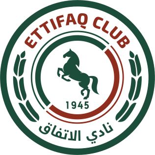
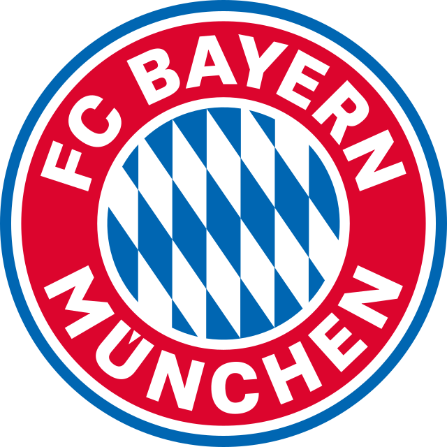
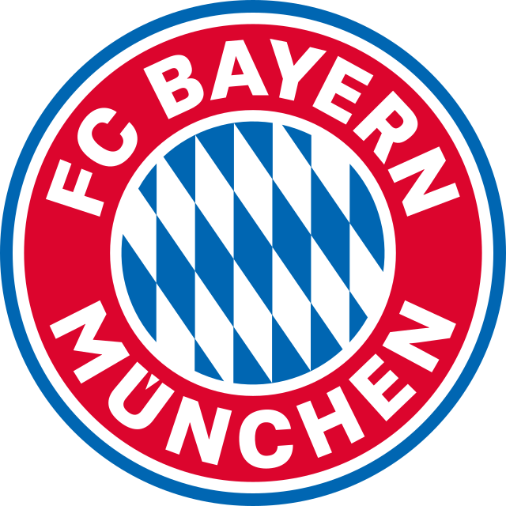
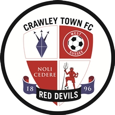
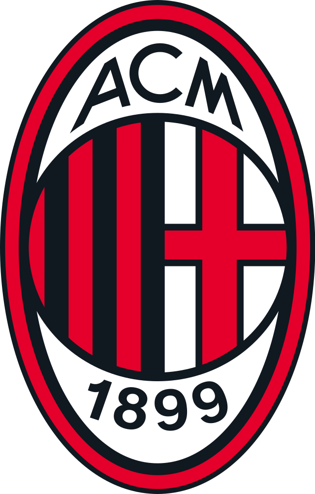
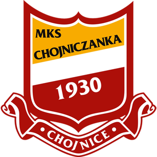
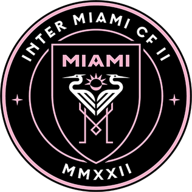

Week 1
Bari 5-4 Al-Ettifaq
Meg of the Week
- Victim: Kacper Figlarz
- Culprit(s): Billy Imanzi
- Location: Stadio San Nicola, Bari
- Date: Monday September 11 th , 2023
Billy embarrassed Kacper with an incredible meg that left Kacper crying on the field. Kacper has now required counselling to help him with the emotional trauma incurred from this event. Billy said, “That was one of the easiest megs I ever performed. That guy has been hiding behind his big brother for years. Time to grow up”.
Goal of the Week
- Goal Scorer: Peter
- Date: Thursday September 14th, 2023
With El-Ettifaq down by three goals after the first leg in Bari, they came out firing, at home, in the second leg. It was no otherthan their world class striker Peter Obot who scored on fantastic build-up. Peter took a pass and deftly fired a shot into the bottom corner. This was El-Ettifaq’s first ever Champions League goal and the celebration was epic. Peter said in an interview afterwards, “I put all the demons of Junior Boys Soccer behind me. El-Ettifaq is where my heart is”
Save of the Week
- Keeper: Isaiah
- Date: Wednesday September 13 th , 2021
With stealth-like reflexes Isaiah palmed a deflected shot by his own teammate, Filip Figlarz, over the bar. Isaiah said afterwards, “I’m always bailing out that guy. Doesn’t even know which net to score on.” Thank goodness for my incredible talent.
Week 2
 Arsenal 10 - 8 Bayern Munich
Arsenal 10 - 8 Bayern Munich
Meg of the Week
- Victim: Amadeus and Ronak
- Culprit(s): Anthony
- Location: Emirates Stadium and BMO
- Date: Monday September 18 th , 2023 and Thursday September 21 st , 2023
Anthony humiliated both Amadeus and Ronak on two separate megs. Anthony could not contain his laughter and was seen high-fiving elementary school kids while muttering how Amadeus and Ronak should go back to their elementary school and play against children of their own talent level.
Goal of the Week
- Goal Scorer: Matteo
- Date: Thursday September 21st, 2023
With Arsenal clinging to a one goal lead, Matteo Occhiogrosso stepped up to a free kick outside the Bayern box. With the Bayern wall set most observers figured Matteo would launch his free kick into another stratosphere, instead Matteo curled the ball into the top corner for an unbelievable goal. In an interview afterwards, Matteo said, “was there any doubt I would score”.
Save of the Week
N/a
Miss of the Week
- Blunderer: Kusai Halwani
What can only be described as a Villain Origin Story, Kusai continues to deserve the distinction of miss of the century. Kusai decided to come to class wearing a Portugal Ronaldo jersey – that was his first blunder. He then decided to launch the ball 150 feet above a wide-open goal – that was his second blunder. Proof of this blunder can be seen on our Google Classroom. Poor Kusai. Hopefully he learned his lesson – no Ronaldo shirts allowed.
Week 3
 Man City 5 - 2 Dinamo
Man City 5 - 2 Dinamo
Meg of the Week
- Victim: Filip Figlarz
- Culprit(s): Anthony Santo
- Location: Dinamo Zagreb Stadium
- Date: Friday October 13th, 2023
After having watched his little brother being victimized a few weeks ago, Filip decided to carry on the family tradition. Anthony completely obliterated Filip with a meg that left Filip crying on the field. Filip claimed that the sun was in his eyes, the wind was in his face and that he was running uphill during the meg. Nobody accepted Filip’s claim and Filip has been researching new hobbies to pass the time. The list includes: tree shaping, beetle fighting, skipping stones and extreme ironing. In an interview afterwards Filip said, “I’ve been fooling myself for years, I’m not worthy of lacing up the boots and wasting Falzata’s class time. Thanks for the memories. I enter a new chapter of my life. If you will excuse me I have to iron my Poland Jersey and put it away until the 2028 Euros, which may be the next time I wear it”
Goal of the Week
- Goal Scorer: Peter Obot
- Date: Friday October 13th, 2023
During the second leg, Peter Obot put on a goal scoring clinic. Peter scored 4 goals in what is being described as one of the greatest goal scoring displays of all time. Every goal was celebrated like it was a Champions League final. In an interview afterwards Peter said, “I have established myself as the GOAT of Grade 11/12 Soccer class. My accomplishments are becoming the stuff you tell your grandchildren about. According to FIFA I am now considered legendary”
Save of the Week
N/a
Miss of the Week
- Blunderer: Faisal Abuosbeh
No words could do justice to this blunder. It deserves the distinction of miss of the week. Billy sets up Faisal for the easiest of goals. Both teams had already turned back to get ready to restart the game with a kick-off. Instead, Faisal decides to miss a wide open net. Both teams, the referee, everyone who lives in the houses across the street and the birds who were minding their own business stood in silence and then broke out into laughter. Faisal didn’t laugh.
Week 4
Crawley Town 3 - 2 San Marino
Meg of the Week
N/a
Goal of the Week
- Goal Scorer: Amadeus
- Date: Friday October 18th, 2023
During the second leg, a corner kick was awarded to the Team from San Marino. The ball was launched into the goal area with a height measured at 54.5m. Everyone thought the ball was headed to the touchline. Everyone, except for Amadeus. Out of nowhere Amadeus soared into the air like an eagle and headed the ball into the goal for a spectacular goal. In an interview afterwards Amadeus said, “The reason why I have been late for every single class since the start of the semester is because I have been working on my vertical. I perform 568 squats every morning, along with 734 burpees. My calves are like granite.”
Save of the Week
- Save: Isaiah
With no time left and a free kick outside the Crawley Town box, the stage was set for the dramatics. Matteo lined up the kick in Ronaldo like fashion and in Ronaldo like fashion, Matteo missed. Controversially, Isaiah managed to stop the free kick before it rolled over the line. Although the goal wasoriginally awarded the Champions League Committee determined that the goal line technology was not working properly (Falzata’s eyes) and thus the goal was rescinded and the game ended in a 0-0 draw.
Miss of the Week
- Blunderer: Kusai Halwani
What can only be described as a Villain Origin Story, Kusai continues to deserve the distinction of miss of the century. Kusai decided to come to class wearing a Portugal Ronaldo jersey – that was his first blunder. He then decided to launch the ball 150 feet above a wide-open goal – that was his second blunder. Proof of this blunder can be seen on our Google Classroom. Poor Kusai. Hopefully he learned his lesson – no Ronaldo shirts allowed.
Week 5
 Liverpool 6 - 5 PSG
Liverpool 6 - 5 PSG
Meg of the Week
- Victim: Amadeus
- Culprit(s): Kusai
- Location: Anfield
- Date: Monday October 30th, 2023
Kusasi’s reign of ultimate villain was on full display at Anfield. Amadeus was the victim of a meg that only someone as evil as Kusai could have perpetrated. Amadeus was left picking up the pieces of his shattered life as he walked off the field at Anfield. The chorus of 50,000 Liverpool fans serenaded Amadeus with, “You’ll Never Walk Alone”. Kusai merchandise is now being sold everywhere (pictured below).
Goal of the Week
- Goal Scorer: Amadeus
- Date: Friday October 18th, 2023
During the second leg, Mr. Try Hard, Mr. Game Seven, Mr. Brexit, Faisal Abuosbeh took the ball, head down, straight ahead and banged home a cracker of a shot from 65 yards out that almost tore the mesh off the net. In an interview Faisal said, “I have been telling people for years that Faisal’s foot is like a cannon, just give Faisal the ball, clear the way and let Faisal shoot the ball. Let Faisal score the goals”. No one knew why Faisal was talking in the third person during the interview.
Save of the Week
N/a
Miss of the Week
- Blunderer: Jayden
Not really a miss but a huge blunder. In the second leg with Liverpool clinging to a one goal lead and PSG fighting valiantly to tie it up, the ball was crossed into the PSG box. Mr. Crybaby “I don’t want to play for Liverpool, I’m wearing a PSG jacket”, Jayden Plytas, decided to score an own goal, costing his team any chance of a comeback. Serves you right you traitor.
Week 6
A.C Milan 7 - 6 Inter Milan
Meg of the Week
N/a
Goal of the Week
- Goal Scorer: Peter
- Date: Wednesday November 8th, 2023
During the second leg, Peter Obot decided to take matters into his own hands with a solo effort that was reminiscent of Zlatan’s 2004 Goal for Ajax (https://www.youtube.com/watch?v=q2WsVHbD7zg). Peter Obot has now solidified himself as the front runner for the 2023 Ballon d’Or. Peter said in an interview afterwards, “I went left, they went right, I went right, they went left. I went right, they went left. I went right, they went left. I went right, they went left.” Peter didn’t understand why he ended up near the corner.
Save of the Week
N/a
Miss of the Week
N/a
Week 7
Chojniczaka Chojnice 4 - 6 Yanga S.C
Meg of the Week
- Victim: Kacper Figlarz
- Culprit(s): Filip Figlarz
- Location: Some Obscure Stadium in a Village in Poland
- Date: Monday November 13th, 2023
Sibling rivalry was in full effect during the first leg of this week’s Champions League. Kacper Figlarz who has become the penultimate Meg of the Week Victim was embarrassed by none other than his own brother Filip Figlarz. Although Kacper has been used to being everyone’s meg victim, this meg took it to a new level. In an interview afterwards (interpreted by a translator because Filip wanted to talk in Polish), Flip said, “That guy has been riding my coattails his whole life. Little did he know that during our childhood I was always the favourite. During dinner, I was always given the biggest piece of meat and an extra helping of perogies. At bedtime my mommy would always read me an extra bedtime story while Kacper was stuck playing with his Lewandowski trading cards. Jestem Najlepsza.”
Goal of the Week
- Goal Scorer: Kusai
- Date: Monday November 13th, 2023
During the first leg, Ultimate Villain Kusai scored a goal that has is in the running for goal of the year. Although Kusai was a free transfer, he showed why he is now considered to be top target in the transfer market this January with a highlight reel goal. Ultimate meg victim Kacper Figlarz miskicked the ball (even his teammate Jayden “Mr. Crybaby” Plytas said he did) and crossed it into the goal area. Out of nowhere, Kusai, with all his superhero powers soared into the air, like his hero Cristiano, and headed the ball downwards into the back of the goal. All 14 of the Polish fans, three cows, two chickens and a goat who made it out to watch this 5th division club that no one has heard of, stood in awe. Kusai’s teammates all had to be resuscitated after the goal. After that goal, Kusai missed an easy finish and life was back to normal.
Save of the Week
N/a
Miss of the Week
N/a
Week 8
 Inter Miami 2 - 4 Al-Nassr
Meg of the Week
- Victim: Billy Imanzi
- Culprit(s): Anthony Santo
- Location: Miami
- Date: Wednesday November 22nd, 2023
It will be difficult to find the right words to describe this week’s Meg of the Week. Billy Imanzi’s reign of megging anyone who came his way ended abruptly, when he became this week’s victim of the meg of the week. Anthony Santo pulled off the most vicious, incredible, jaw-dropping, outrageous, incredulous, preposterous, implausible, improbable meg ever seen. It will go down as the first ever double crossover meg in the history of St. Joseph Soccer Class. Anthony took the ball and violently megged Billy, however, as Billy turned around, Anthony (with a smile on his face) took the ball and megged Billy again. Both teams erupted. Even Billy’s teammates turned on him and congratulated Anthony for humiliating the former King of the Meg. In an interview afterwards Anthony said, “I had it with that guy. His megging days are over.” Billy has officially quit the game of soccer and is now entering roosters into Cockfighting competitions.
Goal of the Week
- Goal Scorer: Nabil
- Date: Thursday November 23rd, 2023
During the second leg, Nabil Skaff Halaby scored an unbelievable goal. With the aggregate tied 3-3 and the game winding down, it looked like penalty kicks were inevitable. However, on an Al Nassr corner kick Nabil came out of nowhere and soared into the air driving home a bullet header and leading Al Nassr to victory. In an interview afterwards Nabil said, “Look, I know my attendance in this class has been a disaster. Who’s kidding who, it’s downright sinful. Thank goodness I have Falzata who exhibits a patience in me that is above all human understanding. But look what happens when I do decide to show up for class, I score highlight reel goals that embarrass everyone who tries to defend me. Now excuse me while I go to the main floor washroom to hang out for 2 hours with anyone who will talk to me.”
Save of the Week
N/a
Miss of the Week
N/a